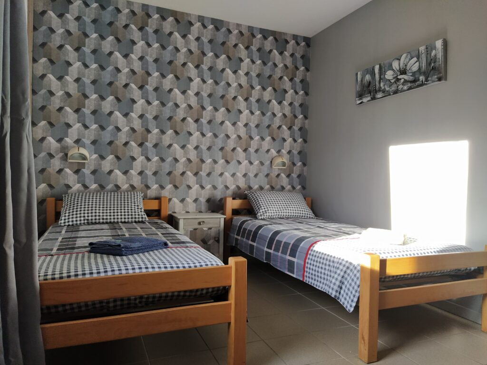

Un gîte plein de charme au cœur de la Franche-Comté
Label Gîte de France 3 épis : hébergement de qualité dans le Doubs
Votre Gîte de France dans le Doubs
Le gîte en Franche-Comté, la Tuffière, label Gîte de France 3 épis, vous offre un hébergement de qualité dans le Doubs.
- Capacité d'accueil : 35 personnes.
- Chambres de 2, 4 et 6 lits avec sanitaires.
- Équipement tout confort.
- Chambre pour personnes à mobilité réduite.
- Salle de séminaire.
- Terrasse ombragée.
- Terrain de boules et de volley.
Voir le détail des 10 chambres (35 couchages)
Toutes les chambres sont équipées de salle d'eau (lavabo, douche et WC).
- La Sitelle : 2 lits individuels
- La Gelinotte : 2 lits individuels (rez-de-chaussée)
- La Mésange : 3 lits individuels
- La Hulotte : 1 lit double + 1 lit individuel
- L'Hirondelle : 1 lit double + 1 lit individuel
- La Fauvette : 4 lits individuels dont 1 superposé
- La Grive : 1 lit double + 2 lits individuels dont 1 superposé
- La Bergeronnette : 4 lits individuels dont 1 superposé
- La Buse : 4 lits individuels dont 1 superposé
- La Colombe : 6 lits individuels dont 2 superposés
Si vous cherchez un gîte de groupe pour accueillir un grand nombre de personnes, La Tuffière est l'endroit qu'il vous faut ! Envie de vous ressourcer dans un Gîte de France dans le Doubs accueillant et charmant ?
De par notre label, notre passion et notre souhait de vous offrir un hébergement au top, vous serez serein en faisant appel à notre gîte de groupe, pour passer une ou plusieurs nuits reposantes.
35 personnes
Capacité d'accueil en chambres de 2, 4 et 6 lits avec sanitaires
Tout confort
Équipement tout confort, chambres personnalisées avec sanitaires
Accessibilité
Chambre pour personnes à mobilité réduite
Salle de séminaire
Espace dédié pour vos réunions et séminaires d'entreprise
Extérieurs
Terrasse ombragée, terrain de boules et terrain de volley
Table d'hôtes
Cuisine régionale à partir de produits locaux
Un espace pour tous les voyageurs : motards et pêcheurs
Nous souhaitons répondre aux besoins d'un grand nombre de personnes. C'est pour cette raison que nous mettons un espace accueillant et charmant à la disposition de tous les voyageurs, des familles aux groupes de motards de tous horizons.
Vous souhaitez passer une semaine entière, un week-end ou simplement une nuit dans notre Gîte de France dans le Doubs ? Rassurez-vous, cela est tout à fait possible !
Nous contacter
Pourquoi choisir un gîte plutôt qu'un hébergement standard ?
Pour des vacances originales et revigorantes, rien ne vaut un gîte bien équipé. C'est l'idéal afin de profiter d'un établissement tout confort sans avoir forcément à se ruiner.
Au cœur du département du Doubs, ce sera aussi le moment parfait pour profiter des différentes installations aux alentours. De nombreux sentiers de randonnées vous permettront de profiter d'un véritable retour à la nature. Notre établissement est également labellisé pêche et Relais Saint-Pierre. Si vous avez envie de venir dans les environs pour pêcher, n'hésitez plus à réserver votre place pour votre séjour en Franche-Comté.
À très bientôt !
On se voit quand ?
Consultez nos tarifs ou contactez-nous directement pour organiser votre séjour.
Voir les tarifs